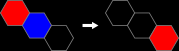
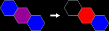
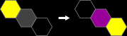
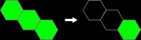
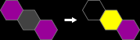
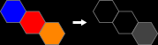

SpectraHex is a single player game in which the objective is to remove as many hexagonal tiles as you can from the game board, in as few moves as possible.
At the game start, you are presented with a full board of randomly placed colored tiles.
Moves consist of leaping a tile over an adjacent tile and onto an empty space or tile. Tiles interact with each other based on their color. More details on move types later.
If you can remove all but a single primary-colored tile, you have done all you can do, and have solved that particular game.
During a game you may undo and redo moves that have been made. This is a normal part of game play and you are encouraged to backtrack to try different approaches.
Hexes on the board may be empty, or filled with one, two or three tiles. The color of the hex shows you which tiles are present. Empty spaces are black. The other colors are explained next.
Primary tiles are the three traditional subtractive primary colors. Red, blue and yellow, these count as one tile remaining:


Secondary tiles are combinations of two of the three primary colors. You will likely know these from painting or coloring. Orange, green and violet, these count as two tiles remaining:


The tertiary tile is all three primaries combined. Shown as gray, they count as three tiles remaining:

There are several kinds of move in SpectraHex. A move means a starting tile will leave its hex, jump over another tile (but NOT over an empty space) and arrive at the hex on the other side.
The starting tile will have an effect on both the tile it leaps over and any it arrives on.
A primary leaping over any other primary will remove it.


Primary tiles may land on an empty space or the same primary, which will now contain that one primary.

A primary leaping over a secondary that contains it will subtract that primary from the secondary.


A primary leaping over a tertiary will subtract that primary from the tertiary.

Secondary tiles may leap over the same secondary, removing it.

Secondary tiles may land on an empty space or the same secondary, which will now contain that one secondary.

A Secondary may leap over a tertiary, subtracting the secondary's two colors from it.


Tertiary tiles may only leap over another tertiary, removing it.
Tertiary tiles may only land on an empty hex or another tertiary, which will then contain the one tertiary.


Primary tiles may also land on a different primary, in which case they will be added together, forming a secondary.

Primary tiles may land on a secondary, adding their color to the other two if possible, forming a tertiary.

Secondary tiles may also land on a primary, in which case they will be added together if possible, forming a tertiary.

To start a move, select a tile by tapping on it. The board will highlight that tile with a white circle and will also highlight any legal destinations for it with black circles.
To complete the move, tap one of the destinations.
To cancel your move, tap the starting tile again (marked with a white circle) and it will be unselected, leaving the board unchanged.
A normal game consists of 36 randomly placed primary tiles, 12 red, 12 blue and 12 yellow.
A difficult game is 9 each of red, blue and yellow, and 3 each of violet, green and orange. Making a total of 45 tiles.
An impossible game is 16 equally distributed primaries, 16 equally distributed secondaries, and 4 tertiaries. Making a total of 60 tiles. This is very tough!